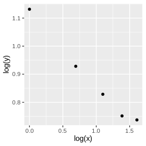
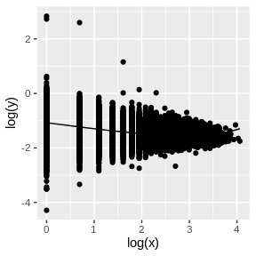
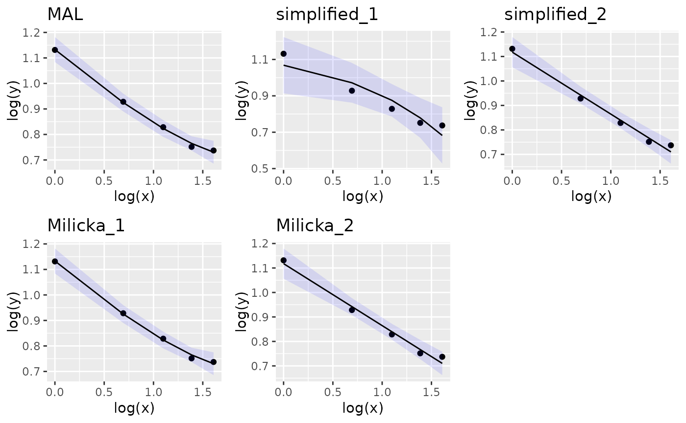

The menzerath
package is used to describe fit and plot data following the
Menzerath’s law. Menzerath’s law (also known as Menzerath-Altmann law)
was initially formulated as a linguistic law describing the relationship
between the size of a linguistic construct and its constituents.
Consider for example the relationship between the size of a word
(y) and its syllables (x). According to
Menzerath’s law in its standard formulation the expected relationship
should follow:
where a, b and c are parameters
of the law.
The package can be installed from github in R by running the following commands:
install.packages("devtools")
devtools::install_github("sellisd/menzerath", build_vignettes=TRUE)the build_vignettes=TRUE can be omitted but then the
vignettes will not be installed.
To demonstrate how to use the package we are going to analyze a classic dataset originally used by Altman 1980 in the mathematical formulation of the Menzerath-Altmann law. The dataset relates the word size, measured in terms of number of syllables to the average syllable size in the word. The size of syllables is measured in terms of number of phonemes.
First we load the library and have a look at the dataset
library(tidyverse)
#> ── Attaching core tidyverse packages ──────────────────────── tidyverse 2.0.0 ──
#> ✔ dplyr 1.1.4 ✔ readr 2.1.5
#> ✔ forcats 1.0.0 ✔ stringr 1.5.1
#> ✔ ggplot2 3.5.1 ✔ tibble 3.2.1
#> ✔ lubridate 1.9.4 ✔ tidyr 1.3.1
#> ✔ purrr 1.0.4
#> ── Conflicts ────────────────────────────────────────── tidyverse_conflicts() ──
#> ✖ dplyr::filter() masks stats::filter()
#> ✖ dplyr::group_rows() masks kableExtra::group_rows()
#> ✖ dplyr::lag() masks stats::lag()
#> ℹ Use the conflicted package (<http://conflicted.r-lib.org/>) to force all conflicts to become errors
library(menzerath)
data(morpheme_syllable)
kbl(morpheme_syllable)| x | y |
|---|---|
| 1 | 3.10 |
| 2 | 2.53 |
| 3 | 2.29 |
| 4 | 2.12 |
| 5 | 2.09 |
We can transform the table to a menzerath object and create a plot:

Then estimate the parameters of the law:
fit_menzerath <- fit(ms)
print(fit_menzerath)
#>
#> Call:
#> lm(formula = log(object$y) ~ log(object$x) + object$x, data = as.data.frame(x = object$x,
#> y = object$y, stringsAsFactors = FALSE))
#>
#> Coefficients:
#> (Intercept) log(object$x) object$x
#> 1.08529 -0.36854 0.04764As a linear fit is performed on log scale in order to get the
estimated parameters the coefficients have to be transformed. This is
facilitated by the get_parameters function:
get_parameters(fit_menzerath)
#> $a
#> [1] 2.9603
#>
#> $b
#> [1] -0.3685362
#>
#> $c
#> [1] -0.04764427The fit can also be visualized with a ribbon plot:
plot(ms, fit=TRUE)
We can now repeat the same analysis in a more recent and larger dataset
(Torre et al., 2019). The BG_word_time dataset contains the
relationship between the size of breath groups and average word size (in
seconds). Breath groups are defined by pauses (e.g. for breathing)
during speech.
BG_word_time
#> # A tibble: 45,034 × 2
#> x y
#> <dbl> <dbl>
#> 1 1 0.405
#> 2 1 0.329
#> 3 1 0.146
#> 4 9 0.318
#> 5 10 0.223
#> 6 1 0.442
#> 7 4 0.323
#> 8 11 0.213
#> 9 1 0.261
#> 10 7 0.309
#> # ℹ 45,024 more rows
Different mathematical formulations of Menzerath’s law have been proposed.
| method name | equation | parameters | reference |
|---|---|---|---|
| simplified_1 | a, c | Altmann 1980 | |
| simplified_2 | a, b | Altmann 1980 | |
| MAL | a, b, c | Altmann 1980 | |
| Milicka_1 | , , | Milicka 2014 | |
| Milicka_2 | , | Milicka 2014 | |
| Milicka_4 | , | Milicka 2014 | |
| Milicka_8 | , , | Milicka 2014 |
Note that methods Milicka_1 and Milicka_2 are identical to the classical Menzerath-Altman formulation (MAL) and simplified_2 correspondingly. The only difference besides notation is the parameter sign so and .
In the classic example of syllable length of Indonesian morphemes Altman estimated a = 2.9603, b = -0.36853 and c = 0.04764. Using the same parameter estimates we can draw the expected form of the law with the different methods.
morpheme_length_vector <- c(1,2,3,4,5)
parameters = c(a=2.9603, b=-0.36853, c=0.04764)
menzerath_methods <- c("simplified_1", "simplified_2", "MAL", "Milicka_1", "Milicka_2", "Milicka_4", "Milicka_8")
mean_syllable_length_vector <- numeric(0)
for(i in c(1:length(menzerath_methods))){
mean_syllable_length_vector <- c(mean_syllable_length_vector, dmenzerath(morpheme_length_vector,parameters=parameters, method=menzerath_methods[i]))
}
tibble(method = rep(menzerath_methods, times=rep(length(morpheme_length_vector),length(menzerath_methods))),
morpheme_length = rep(morpheme_length_vector, length(menzerath_methods)),
mean_syllable_length = mean_syllable_length_vector) %>%
ggplot(aes(x=morpheme_length, y = mean_syllable_length, color = method)) + geom_line()More interesting is to use these alternative models to estimate the parameters from real data. We can do so using Altmann’s data (Altman 1980) on syllable length of indonesian morphemes:
library(cowplot)
#>
#> Attaching package: 'cowplot'
#> The following object is masked from 'package:lubridate':
#>
#> stamp
ms <- menzerath(morpheme_syllable)
MAL_plot <- plot(ms, fit=TRUE, method="MAL") + ggtitle("MAL")
simplified_1_plot <- plot(ms, fit=TRUE, method="simplified_1") + ggtitle("simplified_1")
simplified_2_plot <- plot(ms, fit=TRUE, method="simplified_2") + ggtitle("simplified_2")
Milicka_1_plot <- plot(ms, fit=TRUE, method="Milicka_1") + ggtitle("Milicka_1")
Milicka_2_plot <- plot(ms, fit=TRUE, method="Milicka_2") + ggtitle("Milicka_2")
plot_grid(MAL_plot, simplified_1_plot, simplified_2_plot ,Milicka_1_plot, Milicka_2_plot, ncol = 3)
We can use the menzerath package to process text that
has been manually annotated. Lets assume that we are interested in the
levels of clause, word and syllable. To measure Menzerath’s law we
manually annotate the text of interest by placing symbols in the end of
each construct, constituent and subconstruct. Lets use the following
text as an example:
Greece, which is the most beautiful country I know, was the first place we visited in Europe.
We use as delimiters of words a space character (’ ‘), as delimiters of syllables the star character (’*‘) and as delimiters of clauses the plus sign (’+’).
annotated_text <- paste0("Greece* {which* is* the* most* beau*ti*ful* coun*try*",
" +I* know* +}was* the* first* place* +we* vi*si*ted* in*",
"Eu*ro*pe* +.")
counts_df <- process_text(annotated_text, "+", " ", "*", "{", "}")
kbl(counts_df)| constituents | subconstituents | constructs |
|---|---|---|
| 6 | 9 | which* is* the* most* beautiful* country + |
| 2 | 2 | I* know* + |
| 5 | 5 | Greece* {was* the* first* place* + |
| 3 | 8 | we* visited* inEurope + |
The process_text function calculates the number of
constituents and subconstituents per construct, while allowing for the
possibility of discontinued constructs (e.g. here a clause that is
interrupted by another clause). With this information we can now perform
the statistical analyses, first by calculating the average number of
subconstituents per construct:
In the menzerath package a number of datasets are
included in the form of tibbles that can easily be loaded and
manipulated to serve as examples or test data. There are some classic
datasets from Altmann 1980 and some more recent ones from Torre et
al. 2019
morpheme_syllable: Dataset from Altmann 1980 linking
morpheme size and syllable size.word_syllable_phoneme: Dataset from Altman 1980 on
syllable length in English words.word_syllable_time: Dataset from Altman 1980 on
syllable length in Bachka-German words.BG_word_characters: Dataset from Torre et al. 2019
linking breadth group size and average word size (in number of
characters).BG_word_phonemes: Dataset from Torre et al. 2019
linking breadth group and average word size (in phonemes).BG_word_time: Dataset from Torre et al. 2019 linking
breadth group and word size (in seconds).Further documentation and details about each dataset can be gained
with the help command, e.g:
help(morpheme_syllable)Altmann, G., 1980. Prolegomena to Menzerath’s law. Glottometrika, 2(2), pp.1-10.
Torre Iván G., Luque Bartolo, Lacasa Lucas, Kello Christopher T. and Hernández-Fernández Antoni 2019 On the physical origin of linguistic laws and lognormality in speech R. Soc. open sci.6191023 http://doi.org/10.1098/rsos.191023
Milička, Jiří. (2014). Menzerath’s Law: The Whole is Greater than the Sum of its Parts. Journal of Quantitative Linguistics. 21. 10.1080/09296174.2014.882187.